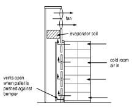
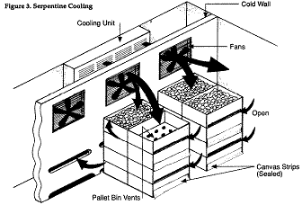

HORT 381 :: Lecture 01 :: METHODS OF STORAGE-PRECOOLING, PRE STORAGE TREATMENTS, LOW TEMPERATURE STORAGE, CONTROLLED ATMOSPHERE STORAGE, HYPOBARIC STORAGE, IRRADIATION AND LOW COST STORAGE STRUCTURES

Chapter 8: Methods of storage-precooling, pre storage treatments, low temperature storage, controlled atmosphere storage, hypobaric storage, irradiation and low cost storage structures
Pre-cooling is the key component in the preservation of quality for perishable fresh produce in post-harvest systems. It is likely the most important of all the operations used in the maintenance of desirable, fresh and salable produce. Precooling is defined as the removal of field heat from freshly harvested produce in order to slow down metabolism and reduce deterioration prior to transport or storage. One of the most important factors affecting the postharvest life and quality of fruits and vegetables is temperature. Quality loss after harvest occurs as a result of physiological and biological processes, the rates of which are influenced primarily by product temperature. As the maintenance of market quality is of vital importance to the success of the horticultural industry, it is necessary not only to cool the product but to cool it as quickly as possible after harvest.
Pre-cooling rapidly lowers the temperature of freshly harvested produce and is done immediately following harvest to minimize spoilage. It is the first operation in the cold chain and is essential for produce (fruits and vegetables) as they are perishable in nature. Although produce may be pre-cooled in a cold storage facility, pre-cooling differs from cold storage. In cold storage, the temperature is simply maintained at a predetermined low temperature. If the cold storage facility is to double as a pre-cooling facility, higher refrigeration capacity is required as well as appropriate provisions for pre-cooling and handling of the produce. The main beneficiary of precooling is the grower as it allows him to sell the produce at the most appropriate time and at the competitive price. Consumers and general economy also benefit through adoption of proper post harvest handling procedures through improved shelf quality, lower real costs for fruits and vegetables through the reduction of losses and spoilage.
Proper pre-cooling preserves product quality by
- inhibiting the growth of decay producing microorganisms
- restricting enzymatic and respiratory activity
- inhibiting water loss
- reducing ethylene production
The importance of precooling
(i) Importance of lag time between harvest and cooling
Field heat can cause rapid deterioration of some horticultural crops and therefore it is desirable to remove this heat as quickly as possible after harvesting. When it comes to produce quality, every minute counts and that precooling is among the most cost-effective and effcient quality preservation methods available to commercial crop produces. For example, strawberries experience increasing deterioration losses as delays between harvesting and cooling exceeds 1 h and the effects of the delay on cooling of strawberries is shown in Fig.1.
Fig.1. Effect of delay before cooling on the quality of Shasta strawberries
From this it can be seen that even after a short time of 2 h at 300C, only 80% of the strawberries are considered marketable fruit, which represents an apparent loss of approximately 10% by not cooling the produce immediately after picking. Furthermore, precooling slows down the deterioration and the rotting process by retarding the growth of decay organisms, and it reduces wilting since transpiration and evaporation occurs more slowly at low temperatures.
(ii) Influence of precooling on the respiration rate
The rate of deterioration after harvest is closely related to the respiration rate of the harvested product, therefore the reduction of respiration rate is essential to preserving market quality. Since the rate of respiration is influenced by temperature , precooling to remove the field heat before storage will reduce the respiration rate and hence deterioration will decline accordingly. For example reduction in temperature of 9.50C in grapes halved the rate of respiration and doubled their keeping quality.
(iii) Influence on metabolism
The increase in the rate of deterioration is related to the metabolic processes of the crop. Within the plants temperature range, the rate of deterioration increases logarithmically with increasing temperature. Metabolic rates double for each 100C rise in temperature. From these reports, it can be seen that the quicker the temperature is reduced the less losses that can occur. Hence, precooling is essential in order to reduce metabolic changes such as enzyme activity, and to slow the maturation of perishable produce.
(iv) Effects of rapid cooing on ethylene
The reduction in temperature has the added advantage of reducing the production and sensitivity of the produce to ethylene that accelerates ripening and senescence. Therefore, the faster and more promptly the field heat and hence temperature is reduced after harvest, the quicker these deteriorative processes are retarded and hence the more of the initial quality can be maintained.
Methods for Precooling Produce
There are seven principal methods of pre-cooling fresh produce:
- Room cooling
- Forced-air cooling
- Hydro-cooling
- Ice cooling
- Vacuum cooling
- Cryogenic cooling
- Evaporative cooling
Considerable loss in quality and shelf life can occur as a result of holding harvested produce in the field before pre-cooling. All methods require sufficient refrigeration capacity to reduce the temperature of the produce within the required time plus the ability to remove the normal heat gain in the facility.
1) Room cooling
Precooling produce in a cold-storage room or precooling room is an old well-established practice . This widely used method involves the placing of produce in boxes (wooden, fiberboard or plastic), bulk containers or various other packages into a cold room, where they are exposed to cold air. It is used for produce sensitive to free moisture or surface moisture. Because this type of cooling is slow, room cooling is only appropriate for very small amounts of produce or produce that does not deteriorate rapidly.
Fig.2. Room cooling
Typically the cold air is discharged into the room near the ceiling, and sweeps past the produce containers to return to the heat exchangers. The cooled air is generally supplied by forced or induced draft coolers, consisting of framed, closely spaced and finned evaporator coils fitted with fans to circulate the air over the coils. Therefore, as to achieve fast and efficient cooling, care should be taken that the correct packaging (well vented) or containers and stacking patterns are used. Air velocities around the packages should be at least 60 m/min to provide the necessary turbulence to achieve heat removal and therefore attain adequate cooling. As much of the cooling is achieved by conduction, room cooling gives a slow and variable temperature reduction, therefore perishable produce used in this method must be tolerant of slow heat removal. A conventional cold store is unsuited for this operation because as much as three-quarters of the refrigerator capacity may be required simply to remove field heat and the cooling rates are frequently no better than 0.50C/h. The rooms commonly used for highly perishable fruit are designed to have an airflow rate of about 170 to 225 m3/min for a room with a capacity of 15,000 kg and sufficient refrigeration so as to cool the fruit to 50C in approximately 12 h. Containers are stacked individually so that cold air from the ceiling blows over or around the produce to contact all surfaces of the containers.
Produce will dry out if a high relative humidity (90-95 percent) is not maintained. Containers should be well vented so as much air as possible can circulate through them. Spacing between the containers and walls must be from 6 to 12 inches, and between the boxes and ceiling, 18 to 24 inches. Room cooling is not recommended for bulk bins because they contain a much greater mass of produce than smaller containers. Proper design of the cooling room and refrigeration equipment is necessary for room cooling to work efficiently. The refrigeration equipment must be capable of cooling down fresh produce within 24 hours and of maintaining the storage temperature of the produce. Normally, much larger refrigeration equipment is needed to cool down the produce than to maintain the produce at a cool temperature. Room cooling has become increasingly difficult as more commodities are being handled in larger quantities and are packaged immediately after harvest due to bettermechanization. These difficulties coupled with its slow and variable cooling extend the cold chain and therefore reduce the product life in subsequent storage.
2) Forced air cooling
Forced air cooling was developed to accommodate products requiring relatively rapid removal of field heat immediately after harvest. Forced air or pressure cooling is a modification of room cooling and is accomplished by exposing packages of produce to higher air pressure on one side than on the other. This technique involves definite stacking patterns and the baffling of stacks so that the cooling air is forced through (rather than around) the individual containers. For successful forced air cooling operations, it is required that containers with vent holes be placed in the direction of the moving air and packaging materials that would interfere with free movement of air through the containers should be minimized. A relatively small pressure difference between the two sides of the containers exists, resulting in good air movement and excellent heat transfer and hence faster cooling.
Produce can be cooled by a variety of different forced air cooling arrangements. These include (a) air circulated at high velocity in refrigerated rooms, (b) by forcing air through the voids in bulk products as it moves through a cooling tunnel on continuous conveyors, and (c) by encouraging forced airflow through packed produce by the pressure differential technique. Each of these methods is used commercially, and each is suited for certain commodities when properly applied. The product cooling rate is affected by numerous variables and, therefore, the overall cost of the forced air cooling will vary. These variables include product size and shape; thermal properties; product configuration (bulk or packaged); carton vent area; depth of product load during cooling; initial product temperature; final desired product temperature and airflow rate, temperature, and relative humidity.
The cooling rate in a given system depends primarily on the velocity of the cold air flowing through it, and this is the only controlling factor, since no change can be made in certain fixed factors such as size, shape and thermal properties of the produce. In addition, the temperature of the cold air cannot be reduced below a certain safe point to avoid chilling injury. In general, the cool air necessary for this type of cooling can be generated from (a) direct expansion refrigeration system, (b) ice bank cooling system and (c) water cascade. Forced air coolers utilise centrifugal (commonly known as squirrel cage) or axial fans which push the cold air around the system. Fans are selected based on the criteria of required airflow and static pres-sure. These requirements are influenced by the type of produce and quantity being cooled, the arrangement of the produce (bulk, boxes or stacking) and the cooling rate required. Differential pressures in use are approximately 0.6 to 7.5 mbar with air flows ranging from 0.001 to 0.003 m3/s kg product.
Fig.3. Forced horizontal air flow Fig.4. Forced vertical air flow
The air can be channeled to flow either horizontally or vertically. In a horizontal flow system, the air is forced to flow horizontally from one side of the pallet load to the other through holes in the sides of the pallet bin or containers. Only two sides that are opposite can be open in the pallet bin or containers. In stacking containers, the side holes must line up for the air to pass from one side of the stack to the other. In this system, the top and bottom of the pallet or containers must be sealed to prevent air from by passing the produce.
In a vertical flow system, the air is forced to flow vertically from the bottom to the top of the pallet through holes in the bottom of the pallet, and containers if used, then out the top. In this system, the sides must be sealed to prevent the air from bypassing the produce. Also, if containers are used, the holes in the tops and bottoms of the containers must line up, so the air can travel vertically from one container to the next. This method is faster than room cooling because a flow of chilled air is in direct contact with the produce. In these systems, condensation on the produce can be minimized by a simple cover placed on top of the stack of containers, which prevents the entry of ambient air during handling.
The key to forced-air cooling is moving the cold air through the container and its contents. Important factors in container ventilation are location of container vents, stacking of containers, and size of the vents. Container vents should be aligned whether the containers are straight-stacked or crossstacked, to maximize air flow through the containers. If vents are too small or too few, air flow is slowed. If there are too many, the container may collapse. In this method, containers are stacked close together (tight). Five percent vent-hole space per side and/or end is best. Liners, bags, wrappers, or dividers can slow the flow of air through the container, so precooling produce is usually recommended prior to additional packing. The following are forced-air cooling alternatives.
Cold Wall
A permanent false wall or air plenum contains an exhaust fan that draws air from the room and directs it over the cooling surface. The wall is at the same end of the cold room as the cooling surface. The wall is built with a damper system that only opens when containers with openings are placed in front of it. The fan pulls cold room air through the container and contents, cooling the produce.

Fig.5. Cold Wall
Forced-air Tunnel
An exhaust fan is placed at the end of the aisle of two rows of containers or bins on pallets. The aisle top and ends are covered with plastic or canvas, creating a tunnel. An exhaust fan draws cool room air through the container vents and top . The exhaust fan may be portable, creating a single forced-air tunnel where needed, or it may be part of a stationary wall adjacent to the cooling surface, with several fans that create several tunnels.
Fig.6. Forced-air Tunnel
Serpentine Cooling
A serpentine system is designed for bulk bin cooling. It is a modification of the cold-wall method. Bulk bins have vented bottoms with or without side ventilation. Bins are stacked several high and several deep with the fork lift openings against the cold wall. Every other forklift opening—sealed with canvas—in the stack matches a cold wall opening. The alternate unsealed forklift opening allows cold air to circulate through the produce. Cold room air is drawn through the produce via the alternate unsealed openings in the stack and the top of the bin.


Fig.7. Serpentine Cooling
Because the cooling air comes in direct contact with the product being cooled, cooling is much faster than with conventional room cooling. Cooling by the forced air method was usually 4 to 10 times faster than room cooling but that hydrocooling and vacuum cooling was 2 to 23 times faster than forced air cooling. Another aspect of forced air cooling is that converting existing facilities is often simple and inexpensive, provided that sufficient refrigeration capacity and cooling surfaces are available. When very rapid cooling is required forced air cooling is more costly than other precooling methods, and therefore this may limit its application to some produce which needs to be cooled extremely quickly. Another drawback of forced air cooling is that it requires a definite stacking pattern hence this technique requires skilled operators so as to achieve the required loading pattern to ensure satisfactory cooling rates.
3) Hydrocooling
Hydrocooling essentially is the utilization of chilled or cold water for lowering the temperature of a product in bulk or smaller containers before further packing. Hydrocooling is achieved by flooding, spraying, or immersing the product in/with chilled water. There are several different hydrocooler designs in operation commercially. Hydrocooling methods differ in their cooling rates and overall process efficiencies. Differences between the individual techniques are evident by the method of cooling and by the way that produce is moved or placed in the cooler. Various types of hydrocooler are available, some of which include conventional (flood) type, immersion type, and batch type. The flood type hydrocooler cools the packaged product by flooding as it is conveyed through a cooling tunnel. With the batch system, chilled water is sprayed over the product for a certain length of time, depending on the season and the incoming product temperature. These hydrocoolers have a smaller capacity than conventional hydrocoolers and are therefore less expensive. A frequent complaint about both conventional and batch type hydrocoolers is that cooling by these techniques is not uniformly and hence may leave `hot spots' throughout the load. For hydrocooling to be effective, contact between the water and the product surface must be uniform. This may not be achieved by these design of hydrocoolers as the chilled water may not be evenly distributed throughout the load, resulting in undercooling of some parts. The bulk or immersion type cooler uses a combination of immersion and flood cooling. Loose produce is immersed in cold water, and remains immersed until an inclined conveyor gradually lifts the products out of the water and moves it through an overhead shower. The most rapid hydrocooling is obtained by this cooling technique. It is nearly twice as rapid as conventional hydrocooling methods, due to the fact that moving chilled water completely surrounds the exterior surface of the produce and hence facilitates quicker temperature reduction. The bulk type cooler has the added benefit over the flood type cooler of allowing greater packaging flexibility, i.e. packaging after cooling, and therefore it may be more suitable to a wide range of growers.
In general products hydrocooled should tolerate being wetted and not be damaged by falling water or disinfectants that it may contain, hence hydrocooling is recommended for produce for which washing is part of their market preparation. A risk associated with most hydrocoolers is the decay hazard associated with recirculated water, which leads to the possibility of decay producing organisms accumulating in the system, resulting in the contamination of the cooled produce. To prevent this from occurring, mild disinfectant such as chlorine at concentrations of 100 ppm (measured as hypochlorus acid) or approved phenol compounds are used and therefore produce cooled by this technique must not be affected by the use of these chemicals. One of the chief benefits of hydrocooling is that it is seen to prevent loss of moisture during the cooling process. Another advantage of this technique is that it is very rapid in contrast to other pre-cooling techniques available. Field heat can be removed in 20-30 min using hydrocooling instead of several hours normally needed for forced air-cooling. Hydro-air cooling is an important and specialized area of hydrocooling in which a mixture of refrigerated air and water in a fine mist spray is circulated around and through stacks of the produce. The advantage of hydro-air cooling is the reduced water requirements and the potential for improved sanitation. In hydro-air cooling the ratio of air-water influences the heat transfer capability of the cooling system and the applicability of certain products to this technique.
Fig.8. Cut-away side view of a continuous-flow shower-type hydrocooler
Fig.9. Cut-away side view of a continuous-flow immersion hydrocooler
Shower coolers distribute water using a perforated metal pan that is flooded with cold water from the refrigeration evaporator. Shower type coolers can be built with a moving conveyor for continuous flow operation or they can be operated in a batch mode. Immersion coolers are suited for product that sinks in water. They usually cool slower than shower coolers because water flows at slower rates past the product.
Water is a better heat-transfer medium than air and, consequently, hydrocoolers cool produce much faster than forced-air coolers. In well-designed shower coolers, small diameter produce, like cherries, cool in less than 10 min. Large diameter products like melons cool in 45 to 60 min. Immersion coolers usually have longer cooling times than shower coolers because water speed past produce is slower. Packages for hydro-cooled produce must allow vertical water flow and must tolerate water contact. Plastic or wood containers work well in hydrocoolers. Corrugated fiberboard must be wax-dipped to withstand water contact. Hydro-coolers cause no moisture loss in cooling. In fact, they can rehydrate slightly wilted product.
4) Ice cooling
In ice cooling, crushed or fine granular ice is used to cool the produce. The ice is either packed around produce in cartons or sacks, or it is made into a slurry with water and injected into waxed cartons packed with produce. The ice then fills the voids around the produce. Before the advent of comparatively modern precooling techniques, contact or package icing was used extensively for precooling produce and maintaining temperature during transit. Although, unlike other cooling methods ice not only removes heat rapidly when first applied, it continues to absorb heat as it melts. There are a variety of different methods in which ice is applied to the produce so as to achieve the desired cooling effect.
Package icing involves direct placement of slush, flaked, or crushed ice over the product in shipment containers. This method is sufficient where it is used; however, it can result in uneven cooling because the ice generally remains where it was placed until it has melted. In liquid icing, ice slurry is used instead of plain crushed ice as it can sustain cooling requirements better. Liquid icing may be considered a hybrid of package icing and hydrocooling. The simplest form of liquid icing is where a mixture of water and finely crushed ice is pumped into open containers travelling along a conveyor under an injection nozzle. If produce has been packed and palletised in the field, the liquid ice can be injected into the packages through vents or hand openings. Liquid-icing distributes the ice throughout the commodity, i.e. placed in each individual package better, thus achieving improved ice/produce contact and hence better and more uniform cooling. Another method of icing is top icing, or placing ice on top of packed containers. This is only used occasionally to supplement another cooling method. Because corrugated containers have largely replaced wooden crates, the use of top icing has decreased. Wax-impregnated corrugated containers have allowed the use of icing of products after packaging to continue; however, it is being replaced by hydrocooling and vacuum cooling.
The major advantage of icing is that produce does not dry as it is cooled. Another advantage is that in addition to removing field heat, package icing can maintain low product temperature during transit and therefore refrigerated transportation may not be necessary for short transport duration. Although icing requires relatively small outlays of special equipment, a large weight of ice must be shipped, thus increasing costs, and also water-proof containers which are more expensive than normal are required for this cooling technique. Another ambiguity of icing is that icing wets the produce and thus the surface of warm wet produce provides an excellent site for post-harvest diseases and soft rots. Therefore, it is essential that produce be not allowed to rewarm once it is iced. Another drawback of this method of pre-cooling is that after the ice has melted, the package is left only partly full. Ice cooling is faster than hydrocooling because contact with the produce is good, and ice has a higher heat removal capacity than water. As in hydro-cooling, ice cooling requires particular attention to water quality and sanitation.
5) Vacuum cooling
Rapid cooling of horticultural produce can be carried out with vacuum cooling. Vacuum cooling is achieved by the evaporation of moisture from the produce. The evaporation is encouraged and made more efficient by reducing the pressure to the point where boiling of water takes place at a low temperature.
The basic principles of the vacuum cooling process are described as follows:
1. At atmospheric pressure (1013 mbar), the boiling temperature of water is 1000C. This boiling point changes as a function of saturation pressure therefore at 23.37 mbar the water boiling temperature will be 200C and at 6.09 mbar, it will be 00C.
2. To change from the liquid to vapour state, the latent heat of vaporization must be provided by the surrounding medium, so that the sensible heat of the product is reduced.
3. The water vapour given off by the product must be removed.
Key components of a 20-pallet capacity vacuum cooler
In the vacuum cooling process the pressure in the vacuum chamber is reduced from atmospheric to about 20 mbar and, during this time, evaporation is slow and relatively little cooling takes place, i.e. temperature of the produce remains constant until saturation pressure at this temperature is reached. At approximately this pressure the `flash point' occurs; this is the point where the water in the produce begins to vapourise, i.e. produce begins to lose moisture and cool rapidly . For example, if the produce had an ambient field heat of 200C then the `flash point' would occur at 24 mbar. At this point the wet bulb temperature sharply increases as the air in the tank is evacuated and is replaced by the evaporated water vapour. This vapour has to be removed quickly in order to keep the overall cooling cycle to a reasonably length, and this is accomplished by the use of a condenser in the chamber. The pressure is further reduced and cooling continues until a pressure corresponding to the desired final saturation temperature is reached. In practice, most operators do not reduce the pressure below 6.09 mbar (saturation pressure corresponding to a temperature 00C because of the extra work involved and because of the freezing potential at reduced pressures.
The heat required to vaporize this water is removed from the product surface, hence the cooling rate is limited by heat and mass transfer , i.e. evaporation rate of water from the products surface and inner tissues. Therefore the rate of cooling depends primarily upon the ratio of surface area of the product to its weight or volume, the ease with which water is given up from the product tissues , the rate of vacuum drawn in the flash chamber and the temperature of the load at the start . Many investigations agree that vacuum cooling of fresh produce by the rapid evaporation of water from the product works best with products having a high ratio of surface to volume. Since water is seen as the primary refrigerant, it is a safe assumption that the quantity of heat removed from the product is directly related to the amount of water evaporated off the products surface.
Vacuum cooling is greatly influenced by the surface area to mass ratio and the ease with which water is released from the products tissues. Large temperature gradients develop in products with a low surface area to mass ratio. In order to prevent surface freezing before the product is cooled to the required temperature, a ``bouncing'' procedure is practised. This is accomplished by switching the vacuum pump off and on to keep the saturation temperature above freezing. One disadvantage of vacuum cooling is that it causes weight loss in the produce being cooled due to the removal of moisture. Temperature reductions average 5 to 5.50C for each 1% of weight loss, regardless of the product cooled. This small loss in weight is usually acceptable in the products that are cooled by this technique. A way of reducing this loss is by spraying free water on to the product before it is placed into the cooling chamber. Special vacuum cooler `hydrovac' have been developed, which have a built-in water spray activated towards the end of the cooling operation and thus minimizes weight loss. The rapid cooling
achievable by the use of vacuum cooling makes it more appealable and gives it a distinct advantage over other cooling techniques. Examples of its speed of removing heat are given previously. Another advantage is that vacuum cooling can achieve uniform cooling throughout a package or lot of produce, provided the package or box is not hermetically sealed to allow free evaporation.
6) Cryogenic cooling
The use of the latent heat of evaporation of liquid nitrogen or solid CO2 (dry ice) can produce `boiling' temperatures of -196 and -780C, respectively. This is the basis of cryogenic precooling. In cryogenic cooling, the produce is cooled by conveying it through a tunnel in which the liquid nitrogen or solid CO2 evaporates. However, at the above temperatures the produce will freeze and thus be ruined as a fresh market product. This problem is prevented by careful control of the evaporation rate and conveyor speed. Cryogenic cooling is relatively cheap to install but expensive to run. Its main application is in cooling crops such as soft fruits, which have a seasonal production period. Hence, by using cryogenic cooling the grower would not incur the high capital costs associated with alternative cooling techniques over such period of use. The high cost of liquid nitrogen, dry ice and other suitable non-toxic refrigerants make this process most suitable for relatively expensive products.
7) Evaporative Cooling
Evaporative cooling is an inexpensive and effective method of lowering produce temperature. It is most effective in areas where humidity is low. Dry air is drawn through moist padding or a fine mist of water, then through vented containers of produce. As water changes from liquid to vapor, it absorbs heat from the air, thereby lowering the produce temperature. The incoming air should be less than 65 percent relative humidity for effective evaporative cooling. It will only reduce temperature, 10-15°F. This method would be suitable for warm-season crops requiring warmer storage temperatures
(45-55°F), such as tomatoes, peppers, cucumbers or eggplant.
Evaporative Cooling
Table Recommended Precooling Methods and Storage conditions for Fruits and Vegetables
Fruits and vegetables |
Temperature F |
% Relative humidity |
Precooling method |
Storage life Days |
Ethylene sensitive |
Apples |
30-40 |
90-95 |
R, F, H |
90-240 |
Y |
Apricots |
32 |
90-95 |
R, H |
7-14 |
Y |
Asparagus |
32-35 |
95-100 |
H, I |
14-21 |
Y |
Avocados |
40-55 |
85-90 |
|
14-28 |
Y |
Bananas |
56-58 |
90-95 |
|
7-28 |
Y |
Beans, snap |
40-45 |
95 |
R, F, H |
10-14 |
Y |
Beans, lima |
37-41 |
95 |
|
7-10 |
|
Beets, roots |
32 |
98-100 |
R |
90-150 |
|
Blackberries |
31-32 |
90-95 |
R, F |
2-3 |
|
Blueberries |
31-32 |
90-95 |
R, F |
10-18 |
|
Broccoli |
32 |
95-100 |
I, F, H |
10-14 |
Y |
Brussel sprouts |
32 |
95-100 |
H, V, I |
21-35 |
Y |
Cabbage |
32 |
98-100 |
R, F |
90-180 |
Y |
Cantaloupe |
36-41 |
95 |
H, F |
10-14 |
Y |
Carrots, topped |
32 |
98-100 |
I, R |
28-180 |
Y |
Cauliflower |
32 |
90-98 |
H, V |
20-30 |
|
Celery |
32 |
98-100 |
I |
14-28 |
Y |
Cherries, sweet |
30-31 |
90-95 |
H, F |
14-21 |
|
Corn, sweet |
32 |
95-98 |
H, I, V |
4-6 |
|
Cranberries |
36-40 |
90-95 |
|
60-120 |
|
Cucumbers |
50-55 |
95 |
F, H |
10-14 |
Y |
Eggplant |
46-54 |
90-95 |
R, F |
10-14 |
Y |
Endive |
32 |
90-95 |
H, I |
14-21 |
Y |
Garlic |
32-34 |
65-75 |
N |
90-210 |
|
Grapefruit |
50-60 |
85-90 |
|
28-42 |
|
Grapes |
32 |
85 |
F |
56-180 |
|
Kiwifruit |
32 |
95-100 |
|
28-84 |
Y |
Leeks |
32 |
95-100 |
H, I |
60-90 |
Y |
Lemons |
50-55 |
85-90 |
|
30-180 |
|
Lettuce |
32 |
85-90 |
H, I |
14-21 |
Y |
Limes |
48-50 |
85-90 |
|
21-35 |
|
Mushrooms |
32 |
95 |
|
12-17 |
|
Nectarines |
31-32 |
95 |
F, H |
14-18 |
Y |
Okra |
45-50 |
90-95 |
|
7-14 |
Y |
Onions, bulb |
32 |
65-70 |
N |
30-180 |
|
Onions, green |
32 |
95-100 |
H, I |
7-10 |
|
Oranges |
32-48 |
85-90 |
|
21-56 |
|
Peaches |
31-32 |
90-95 |
F, H |
14-28 |
Y |
Pears |
32 |
90-95 |
F, R, H |
60-90 |
Y |
Peas, in pods |
32 |
95-98 |
F, H, I |
7-10 |
Y |
Peppers, bell |
45-55 |
90-95 |
R, F |
12-18 |
Y |
Peppers, hot |
45-50 |
60-70 |
R, F |
14-21 |
Y |
Pineapple |
45-55 |
85-90 |
|
14-36 |
|
Plums |
32 |
90-95 |
F, H |
14-28 |
Y |
Potatoes, early |
50-60 |
90 |
R, F |
56-140 |
|
Potatoes, late |
40-50 |
90 |
R, F |
56-140 |
Y |
Pumpkins |
50-60 |
50-75 |
N |
84-160 |
|
Radishes |
32 |
95-100 |
I |
21-28 |
|
Raspberries |
32 |
90-95 |
R, F |
2-3 |
Y |
Rutabagas |
32 |
98-100 |
R |
120-180 |
|
Spinach |
32 |
95-100 |
H, I |
10-14 |
Y |
Squash, summer |
41-50 |
95 |
R, F |
7-14 |
Y |
Squash, winter |
50-55 |
50-70 |
N |
84-150 |
|
Strawberries |
32 |
90-95 |
R, F |
5-10 |
|
Sweet potatoes |
55-60 |
85-90 |
N |
120-210 |
Y |
Tangerines |
40 |
90-95 |
|
14-28 |
|
Tomatoes |
62-68 |
90-95 |
R, F |
7-28 |
Y |
Turnips |
32 |
95 |
R, H, V, I |
120-150 |
|
Watermelon |
50-60 |
90 |
N |
14-21 |
|
F = forced-air cooling, H = hydrocooling, I = package icing, R = room cooling, V = vacuum cooling, N = no precooling needed. Sources: USDA Agricultural Marketing Service, Kansas State University Cooperative Extension Service.
Further Reading
- Ibrahim Dincer. (1995). Air Flow Precooling of Individual Grapes. Journal of Food Engineering, 26, 243-240.
- Barbara Teruel; Theo Kieckbusch; Luis Cortez. (2004). COOLING PARAMETERS FOR FRUITS AND VEGETABLES OF DIFFERENT SIZES IN A HYDROCOOLING SYSTEM. Sci. Agric. (Piracicaba, Braz.), v.61, n.6, p.655-658.
- James F. Thompson, F.Gordon Mitchell, and Robert F. Kasmire. Cooling horticultural commodities in Postharvest technology of horticultural crops, Third Edition, (2002). University of California, Agriculture and Natural Resources. pp 97-112.
- Jennifer R. DeEll ; Clement Vigneault ; Stephanie Lemerre.(2000). Water temperature for hydrocooling field cucumbers in relation to chilling injury during storage. Postharvest Biology and Technology, 18 ,27–32.
- Tadhg Brosnan; Da-Wen Sun. (2001). Precooling techniques and applications for horticultural products - a review. International Journal of Refrigeration, 24, 154-170.
- www.oznet.ksu.edu/library/hort2/samplers/mf1002.asp
- www.omafra.gov.on.ca/english/engineer/facts/98-031.htm
- www1.agric.gov.ab.ca/$department/deptdocs.nsf/all/agdex7463
- usna.usda.gov/hb66/011precooling.pdf
- www.bae.ncsu.edu/programs/extension/publicat/postharv/ag-414-5/index.html.
| Download this lecture as PDF here |